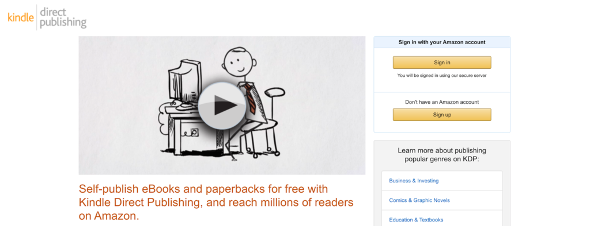

หากคุณใฝ่ฝันที่จะเขียนหนังสือเพื่อหาเลี้ยงชีพนี่อาจเป็นช่วงเวลาที่ดีที่สุดที่จะทำ การปฏิวัติการเผยแพร่ด้วยตนเองทำให้ทุกคนสามารถหาเลี้ยงชีพด้วยการพิมพ์หนังสือได้

โปรดทราบว่าเนื่องจากมีสิ่งกีดขวางที่ต่ำกว่าสำหรับการเข้าจึงหมายถึงการแข่งขันที่มากขึ้นด้วย แต่ด้วยการเขียนหนังสือที่ดีที่สุดเท่าที่จะเป็นไปได้และตอบสนองความคาดหวังของผู้อ่านคุณสามารถเพิ่มโอกาสในการประสบความสำเร็จได้
เมื่อเผยแพร่หนังสือ Kindle ของคุณเองขั้นตอนการเผยแพร่ทุกแง่มุมจะอยู่ภายใต้การควบคุมของคุณ ซึ่งหมายความว่าคุณต้องรับผิดชอบในการเขียนแก้ไขจัดรูปแบบรับหน้าปกอัปโหลดไปยัง Amazon เขียนคำอธิบายหนังสือของคุณและทำการตลาด
เคล็ดลับบางประการในการปรับปรุงความสำเร็จของคุณในฐานะผู้เขียนเผยแพร่ด้วยตนเองมีดังนี้:
1. ค้นหาเฉพาะกลุ่มของคุณอย่างรอบคอบตรวจสอบให้แน่ใจว่ามีตลาดหนังสือที่มีศักยภาพซึ่งไม่มีการแข่งขันสูงเกินไป แต่ก็ยังมีผู้ชมที่มีศักยภาพ
2. เขียนหนังสือที่ดีที่สุดเท่าที่จะเป็นไปได้และจ้างบรรณาธิการมืออาชีพ
3. ลงทุนในหน้าปกและคำอธิบายหนังสือคุณภาพสูงองค์ประกอบทั้งสองนี้ทำงานร่วมกันเมื่อคุณจำเป็นต้องขายหนังสือของคุณ
4. เผยแพร่หนังสือของคุณเป็นซีรีส์และตั้งเป้าที่จะครองตลาดที่กำหนด
ความสำเร็จของคุณในฐานะนักเขียนอยู่ภายใต้การควบคุมของคุณ เขียนหนังสือที่ดีที่สุดเท่าที่จะเป็นไปได้และสร้างรายชื่ออีเมลของผู้อ่านในอุดมคติของคุณ ยิ่งคุณจะได้เรียนรู้มากขึ้นและวิธีการสร้างรายได้มากขึ้นก็จะเปิดให้คุณ
LINE: 【คลิกเพื่อเปิดLINE】